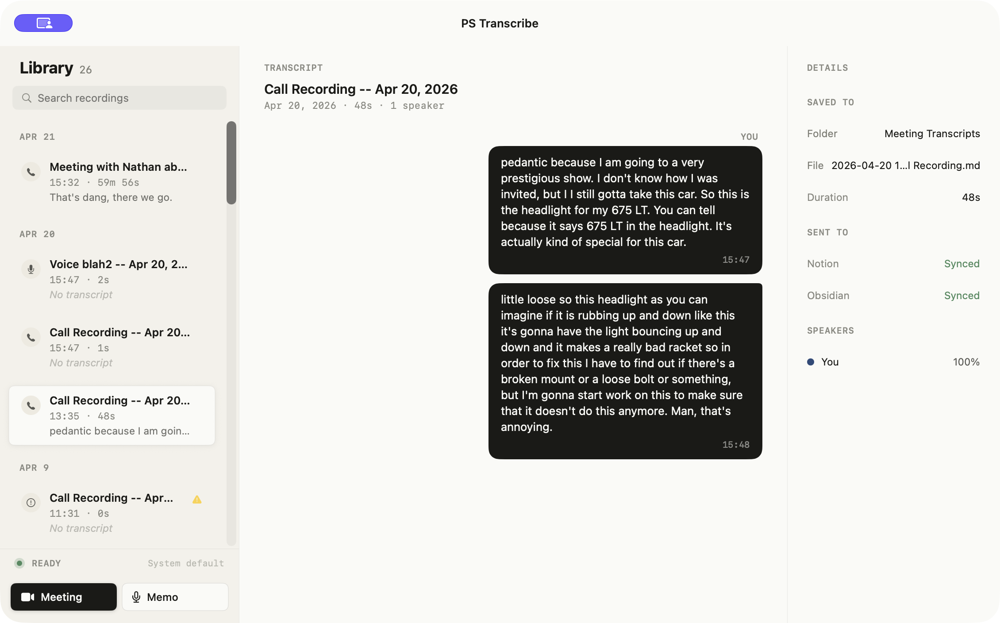

A native macOS transcriber built around one idea: call recordings are private, so the software that handles them should be too. No cloud APIs. No telemetry. Nothing uploaded, ever.
macOS 14+ · Apple Silicon & Intel · Free & open source

Parakeet-TDT runs locally through FluidAudio. No upload step, no API keys, no cloud fallback.
Markdown with YAML frontmatter dropped into the folder you configure. Optional one-click send to a Notion database.
Paper palette, hairline rules, keyboard-first. One window, three columns. No tutorials, no modals, no celebrations.
Uses ScreenCaptureKit to pull the other side of the call cleanly, while your mic is captured separately. After the session ends, Silero VAD and diarization resolve who said what.
Your side sits right; Speaker 2 sits left with a sage rail. Rename any speaker inline, and every subsequent bubble updates. Click any timestamp to scrub the session.
Markdown file, YAML frontmatter, saved to the folder you configure. No proprietary format, no export step — the transcript is a note in your vault, instantly linkable.
Speaker 2 · 14:22 — Last thing, did the encoder change land?
You · 14:29 — Yesterday. Running on main.
Speaker 2 · 14:35 — Good. Let's queue the diarizer next sprint.
Configure a Notion database once. When you stop recording, PS Transcribe can send the transcript as a new page — with the same frontmatter mapped into properties. Leave it off and nothing syncs.
| Infra planning | Apr 18 | meeting | 18m |
| Design review | Apr 19 | design | 41m |
| Product sync — Apr 22 | Just now | product | 32m |
No sign-up. No telemetry. One download, one app, one folder in your vault.
Download for macOSFree · Open source · macOS 14+ (Sonoma & later)